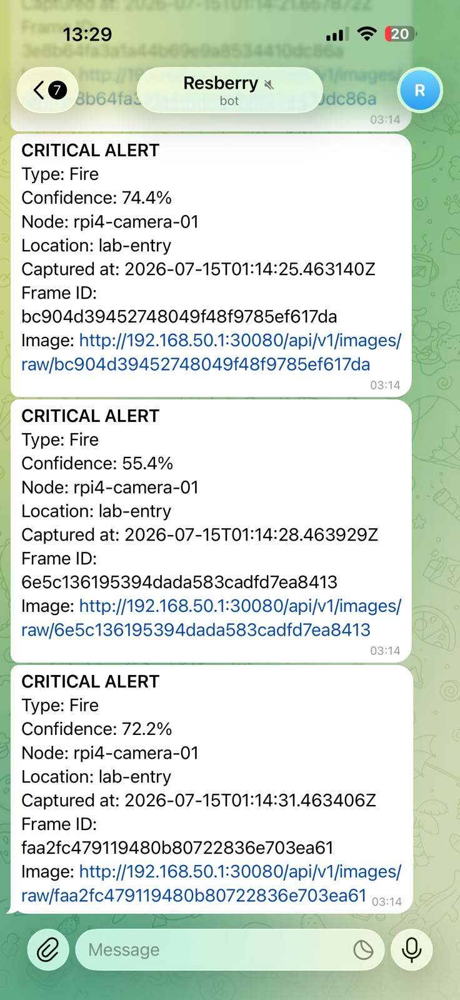

Telegram Bot Integration
1. Overview
The Telegram Bot integration provides real-time notifications for the PiWatch edge monitoring system. The FastAPI backend communicates directly with the Telegram Bot API to verify bot connectivity and deliver notifications to a configured Telegram chat.
Unlike the frontend, Telegram does not require a separate application or service. The backend itself is responsible for sending notifications whenever Telegram is enabled and a valid bot configuration is available.
2. System Integration
| Component | Responsibility |
|---|---|
| Raspberry Pi 4 | Captures images and uploads frames to the backend |
| FastAPI Backend | Processes uploads, performs inference workflow and communicates with Telegram |
| YOLO Inference Service | Detects objects from uploaded images |
| SeaweedFS | Stores raw images, annotated images and metadata |
| Telegram Bot API | Delivers notifications to the configured Telegram chat |
| React Frontend | Displays Telegram service status using backend APIs |
3. Telegram Architecture

Figure 1. Telegram notification
The notification flow is:
- Raspberry Pi 4 captures a frame.
- The frame is uploaded to the FastAPI backend.
- The backend validates the upload and performs object detection.
- Detection results are stored together with image metadata.
- If Telegram is enabled, the backend communicates with the Telegram Bot API.
- Telegram delivers the notification to the configured chat.
Screenshot Placeholder
Filename
4. Telegram Bot Setup
Step 1 – Create the Bot
- Open Telegram.
- Search for @BotFather.
- Execute:
- Enter a bot name.
- Enter a unique bot username ending with bot.
- BotFather returns a Bot Token.
Step 2 – Start the Bot
Open the newly created bot.
Send
This creates a conversation that the backend can later use.
Step 3 – Obtain Chat ID
Run
Locate
This value becomes the Telegram Chat ID.
Screenshot Placeholder
Bot Creation
5. Backend Configuration
Telegram configuration is loaded from environment variables.
These values are never stored directly in source code.
6. Kubernetes Configuration
Sensitive Telegram credentials are stored inside the Kubernetes Secret.
Example:
The backend deployment loads:
- backend-config ConfigMap
- backend-secret Secret
using
This allows credentials to be changed without modifying the application source code.
Screenshot Placeholder
Kubernetes Secret
(Hide the actual values.)
7. FastAPI Integration
The Telegram router is registered in the FastAPI application.
Implemented endpoint:
This endpoint verifies:
- Telegram is enabled
- Bot token exists
- Chat ID exists
- Backend can communicate with the Telegram Bot API
The monitoring endpoint also exposes Telegram status through
allowing the frontend Monitoring page to display the current Telegram service status.
Screenshot Placeholder
Telegram Status API
8. End-to-End Workflow
The implemented notification workflow is:
Pi4 Camera
│
▼
FastAPI Backend
│
▼
YOLO Inference
│
▼
Store Images + Metadata
│
▼
Telegram Service
│
▼
Telegram Bot API
│
▼
Telegram Chat
9. Testing
The following tests were performed during development.
Verify Backend Status
Expected result:
- Telegram configured
- Bot reachable
Verify Monitoring API
The response includes Telegram service status used by the frontend Monitoring page.
Verify Bot Connectivity
The backend communicates directly with the Telegram Bot API using the configured Bot Token and Chat ID.
Successful communication confirms:
- Bot Token is valid
- Chat ID is valid
- Internet connectivity is available
- Telegram API is reachable
Screenshot Placeholder
Telegram Notification
10. Troubleshooting
| Problem | Possible Cause | Solution |
|---|---|---|
| Telegram disabled | TELEGRAM_ENABLED=false |
Enable Telegram in backend configuration |
| Invalid Bot Token | Incorrect or revoked token | Generate a new token using BotFather |
| Invalid Chat ID | Wrong chat ID | Obtain the correct chat ID using getUpdates |
| Network unreachable | Backend pod has no Internet connectivity | Verify network routing and DNS |
| Bot not started | User never sent /start |
Open the bot and send /start |
11. Security
The following practices are followed:
- Store Bot Token in Kubernetes Secret.
- Never commit Telegram credentials to Git.
- Never expose Bot Token through APIs.
- Hide Bot Token and Chat ID in screenshots.
- Rotate Bot Token immediately if exposed.